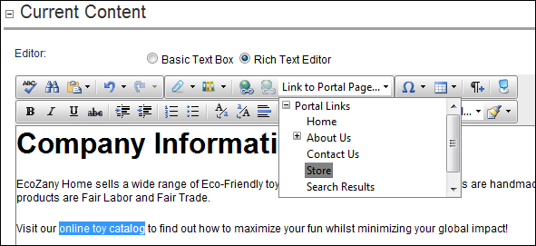

How to link to any page of your site using the DotNetNuke.RadEditorProvider for the RTE. Note: You can only select links which you are authorized to view. E.g. Only Administrators can link to the Admin Console pages.

Tip: If you didn't select any text/object at Step 1, then the page name is used as the linked text. E.g. If you link to the Home page, then a Home link is inserted.